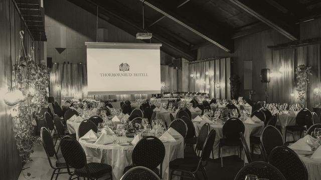
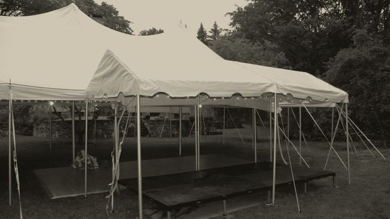

Blog
Writing on live music for events.
Occasional pieces on planning it, pricing it, and the music itself.
What is a jazz trio?
Three musicians, and the instrument list is what people are usually asking about. The classic combinations, the one that works at a private event, what a quartet adds, and how to pick between them.
What a jazz band costs in Denver
A jazz band's price depends first on its size. Here is what the market charges for one guitarist, a duo, a trio and a quartet, for an hour and for an evening, so the budget line can be written today.
What a DJ costs in Denver
The word covers two different purchases, and the market prices them a long way apart. Here is what a DJ costs for four hours, for a wedding and for a corporate party, and where the production DJ with lighting sits above all of it.

January office party ideas
The company party that happens after the holidays: why the date works, seven ways to run it, and the themes that don't need a tree.
How far ahead to book entertainment for a company party
The corporate calendar the way Denver's venues and planners actually run it, the order the decisions go in, and what to have in hand before you ask a band for a number.
Gala entertainment ideas
Nine ways to run the music at a gala or an award night, placed against the program, with notes on the celebrity emcee and the silent disco.
Corporate event entertainment ideas in Denver
Eleven ways to run the evening part of a company event, music and otherwise, ranked by what each one asks of the crowd, with the sizes and the numbers attached.

Company picnic entertainment ideas in Denver
Eight ways to run the summer company party, from the lawn to the patio to the evening it turns into, with what each one needs from the weather and the power.

Company offsite ideas in Colorado for remote teams
The one week a year a distributed company is in the same place: how remote teams plan the offsite, where they go in Colorado, and seven evenings that do the work the agenda cannot.

How far ahead to book wedding musicians in Colorado
What couples actually report about their own timing, the order the decisions come in, and the eight things to have ready before you write to anybody.
Corporate retreat evening ideas in Vail
The days plan themselves. Eight things to do with the evenings in Vail and the valley, and the planner notes that decide which of them survive contact with the venue.
Client appreciation event ideas in Denver
Eight evenings that thank a client list instead of presenting to it, with the notes that change for financial advisors, realtors and law firms.
Band or DJ for a Denver wedding or company party
We sell both, so here is the comparison without a thumb on the scale: what each one actually does to a night, what this market charges for either, and why most full evenings end up booking both.
Office holiday party entertainment ideas in Denver
Seven shapes a Denver office party can take, each with the size it actually needs, plus what changes for a large group and what changes in January.
How to read a band quote
A quote is one number sitting on top of six or seven decisions. The number is the last thing to look at. Here is the rest of it, in the order it matters.
Where to hold a corporate holiday party in Denver in 2026
Sixteen venues with real private-event pages, sized from a mezzanine over Union Station to a hangar that holds 3,500, with the notes we would hand a client on each.
What changes when the reception is outdoors
Power, cover, the weather call, and the two ways an outdoor site works against volume at once. Including the Colorado decibel cap most outdoor receptions are actually bound by.
What live music costs for a corporate event
A band's price has two parts. Here is what each one covers, what two hours costs against four, and what the total comes to for the formats a Denver corporate night actually takes.
What a band needs from the venue
Stage footprint, power, load-in and the paperwork your venue and your finance team will both ask for. Including why published stage-size guidance runs to more than double what our own bands ask for.
Playing around a program
A gala runs on a document with eleven things in a fixed order. What the band does around remarks, an award, an auction and a video package, and who calls each one.